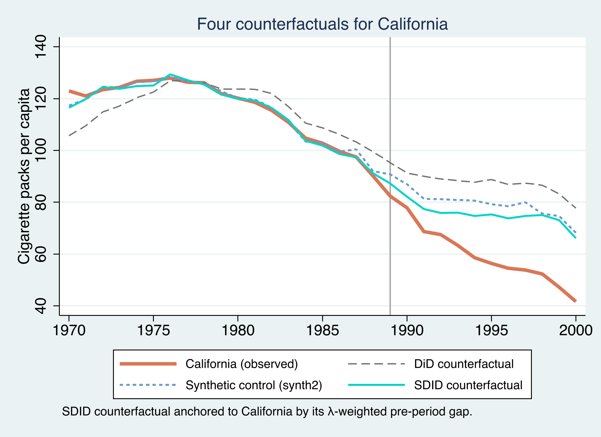
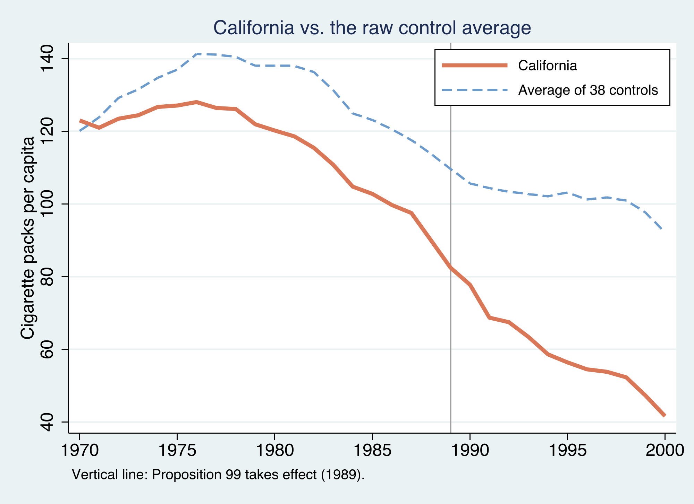
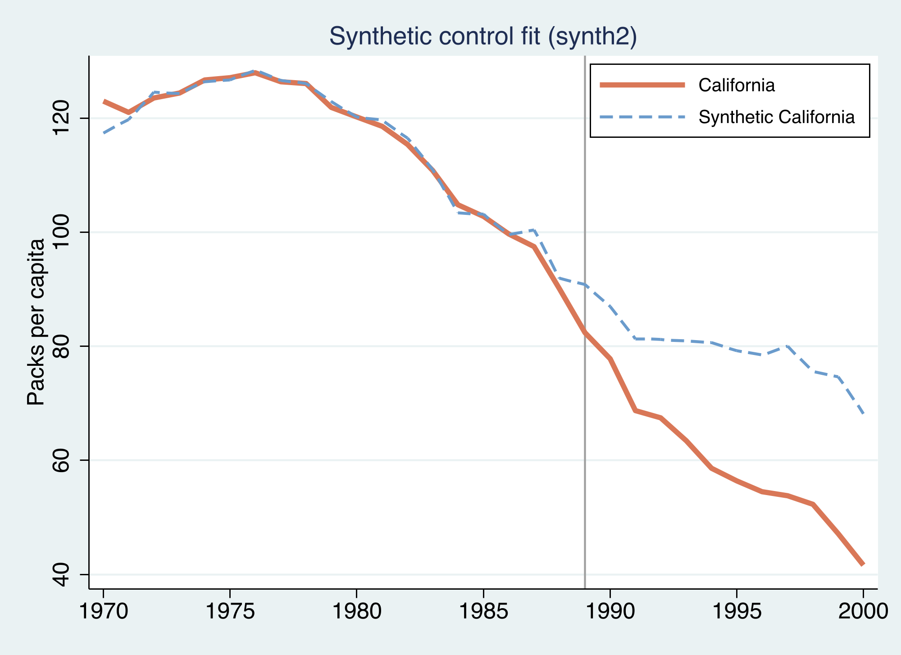
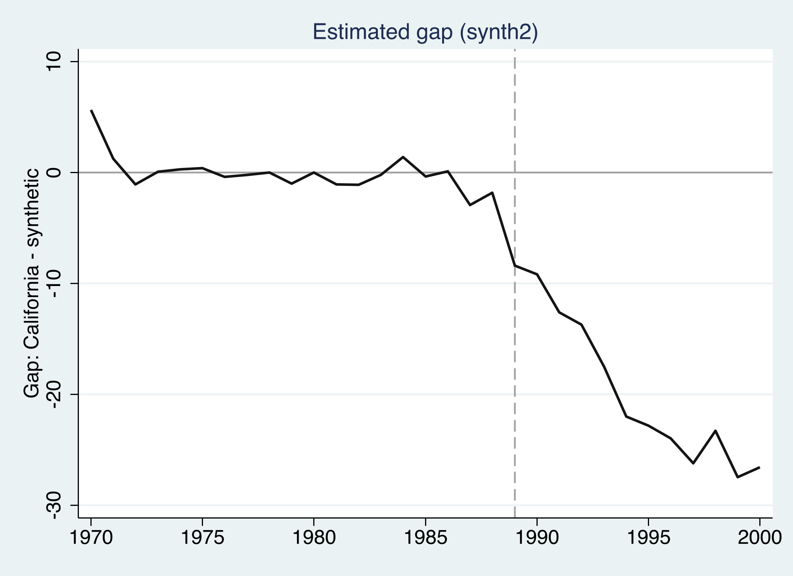
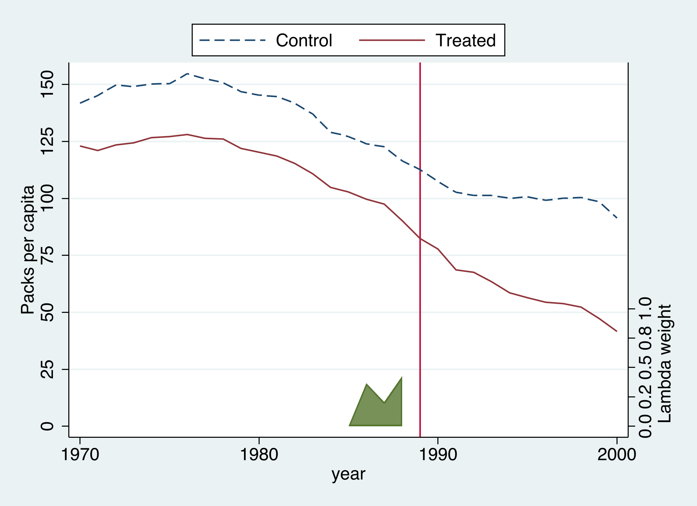
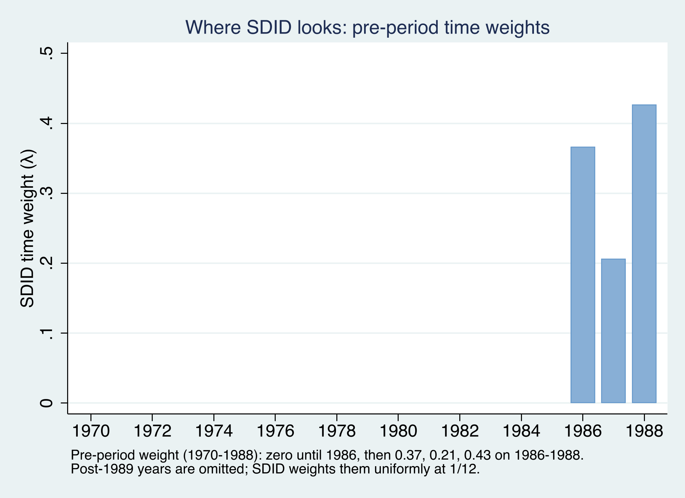
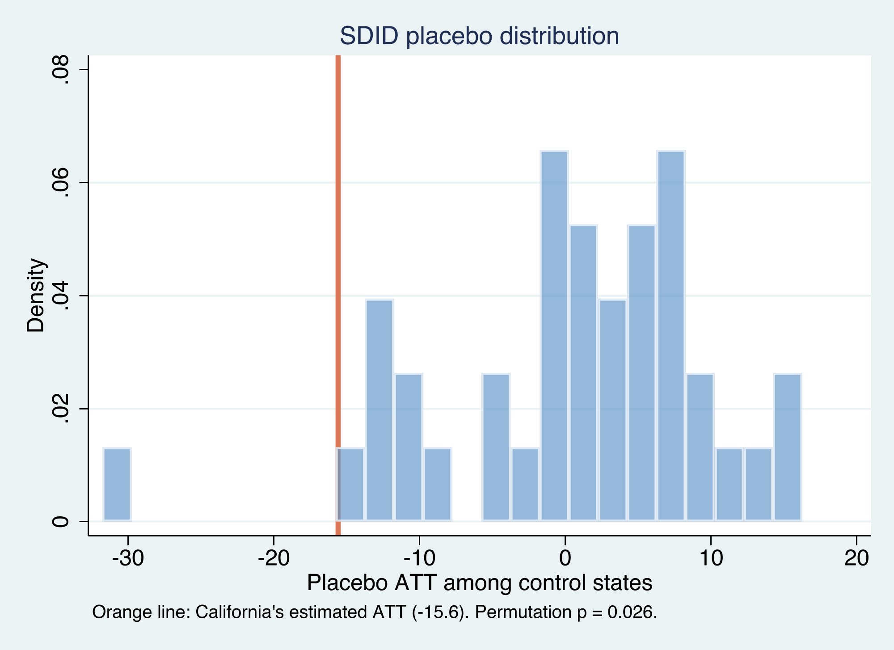

Re-evaluating California’s Proposition 99 with the sdid command
Nagoya University (GSID)
June 11, 2026
Act I
In November 1988, California raised its cigarette tax by 25 cents a pack and funded an anti-smoking campaign.
To measure the effect we need California’s smoking without the law — a counterfactual we never get to see. Every method here is a different way to imagine it.

ATT in packs per capita. The naive 2×2 DiD counterfactual sits highest (−27), synthetic control next (−19.5), and SDID closest to California (−15.6). All four lines track California before 1989, then separate.
Act II
1,209 observations, of which only 12 are treated. That extreme imbalance is the defining feature of a comparative case study — and it dictates how we do inference.

California (orange) already smoked less than the 38-state average and was declining through the 1980s; after 1989 the gap widens — but the two series differed in level and slope before the policy, so a raw comparison is not enough.
\[\tau = \frac{1}{N_{tr}\, T_{post}} \sum_{i:\, W_i = 1}\ \sum_{t > T_{pre}} \left[\, Y_{it}(1) - Y_{it}(0) \,\right]\]
Average, over treated units and post-1988 years, of the outcome with the policy minus the outcome that would have occurred without it. With \(N_{tr}=1\), every method is just a different way to impute the missing \(Y_{it}(0)\).
\[\left(\hat{\tau}^{sdid}, \hat{\mu}, \hat{\alpha}, \hat{\beta}\right) = \underset{\tau,\mu,\alpha,\beta}{\arg\min} \sum_{i=1}^{N} \sum_{t=1}^{T} \left(Y_{it} - \mu - \alpha_i - \beta_t - W_{it}\,\tau\right)^{2}\, \hat{\omega}_i^{sdid}\, \hat{\lambda}_t^{sdid}\]
\(\alpha_i\) is a state fixed effect, \(\beta_t\) a year fixed effect, \(\tau\) the ATT. The two extra terms — \(\hat{\omega}_i\) (unit weight) and \(\hat{\lambda}_t\) (time weight) — are everything that separates SDID from ordinary regression.
SDID keeps the best of both: optimized \(\hat{\omega}_i\) and \(\hat{\lambda}_t\), with the unit FE retained — match the trend, allow a level gap.
\[\hat{\omega}^{sdid} = \underset{\omega \in \Omega}{\arg\min} \sum_{t=1}^{T_{pre}} \left(\omega_0 + \sum_{i=1}^{N_{co}} \omega_i\, Y_{it} - \frac{1}{N_{tr}} \sum_{i=N_{co}+1}^{N} Y_{it}\right)^{2} + \zeta^{2}\, T_{pre}\, \lVert \omega \rVert_2^{2}\]
The intercept \(\omega_0\) lets SDID match California’s trend without matching its level. The ridge penalty \(\zeta^{2} T_{pre} \lVert \omega \rVert_2^{2}\) spreads weight across donors instead of betting on one or two.
\[\hat{\lambda}^{sdid} = \underset{\lambda \in \Lambda}{\arg\min} \sum_{i=1}^{N_{co}} \left(\lambda_0 + \sum_{t=1}^{T_{pre}} \lambda_t\, Y_{it} - \frac{1}{T_{post}} \sum_{t=T_{pre}+1}^{T} Y_{it}\right)^{2} + \zeta_{\lambda}^{2}\, N_{co}\, \lVert \lambda \rVert^{2}\]
Find pre-period year weights so the weighted pre-period outcome matches each control’s post-period average. Years that look most like the post-period get the most weight — we will see all of it land on 1986–1988.
| Term | Coefficient | SE | Sig. 5%? |
|---|---|---|---|
cal#post (DiD) |
−27.35 | 10.91 | yes |
1.post |
−28.51 | 1.75 | yes |
1.cal |
−14.36 | 6.79 | yes |
The 2×2 DiD: California’s before/after drop (−55.9) minus the controls’ drop (−28.5) = −27.35 packs.

Synthetic California (blue dashed) tracks real California (orange) almost perfectly before 1989, then the two separate sharply.

The estimated gap (California minus synthetic) is flat and near zero through 1988 — the pre-period fit is good — then falls steadily to roughly −27 packs by 2000.

The SDID diagnostic: California (red) versus the trend-matched synthetic (blue dashed), which sits above California by a roughly constant gap. The green ribbon shows the time weights, concentrated on 1986–1988.

SDID’s pre-period time weights fall almost entirely on 1986, 1987, and 1988 (0.37, 0.21, 0.43); the earlier sixteen years get zero.
method()method(did) returns −27.349 — identical to the hand-computed 2×2. method(sc) returns −19.620, essentially the standalone synth2’s −19.481. All three are special cases of one weighted regression.
| Method | Command | ATT |
|---|---|---|
| Raw 2×2 DiD | reg y i.cal##i.post |
−27.35 |
| DiD (unified) | sdid …, method(did) |
−27.35 |
| Synthetic control | synth2 … |
−19.48 |
| SC (unified) | sdid …, method(sc) |
−19.62 |
| SDID | sdid …, method(sdid) |
−15.60 |
Act III
−15.60
\(\hat{\tau}^{sdid}\), the ATT of Proposition 99 on California · matches Arkhangelsky et al. (2021)
The design forces the method: \(N_{tr}=1\) rules out jackknife and bootstrap, leaving the permutation procedure.
9.88
placebo standard error · 95% CI [−35.0, 3.8] includes zero (\(p = 0.114\) by normal approximation)

California’s estimated effect (orange line, −15.6) sits in the extreme left tail of the placebo distribution; almost every control state shows an effect near zero.
Objection. SDID’s interval includes zero, so we cannot even be sure Proposition 99 did anything.
Response. The magnitude is imprecise, but the sign is robust: the permutation test (\(p = 0.026\)) ranks California’s drop far in the placebo tail, and all three estimators agree the effect is negative. Wide intervals are the honest price of one treated unit — not evidence of no effect.